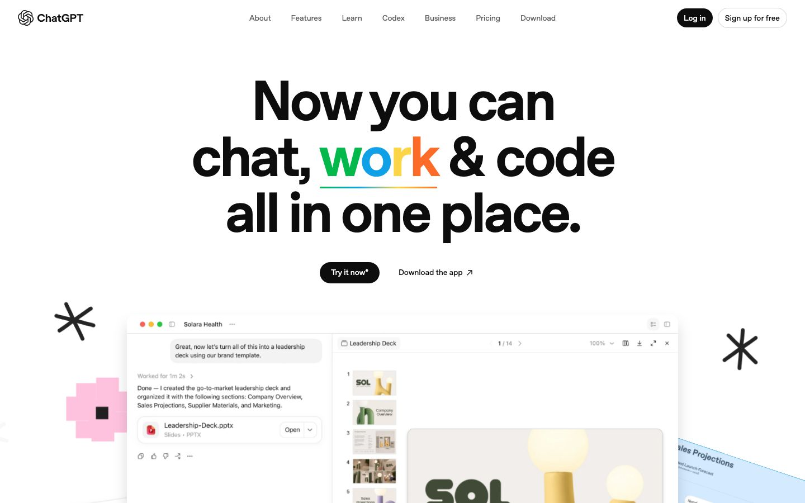
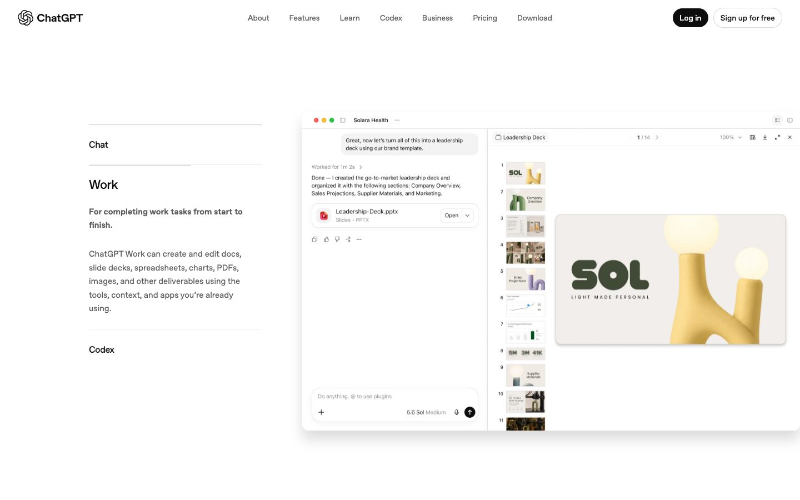
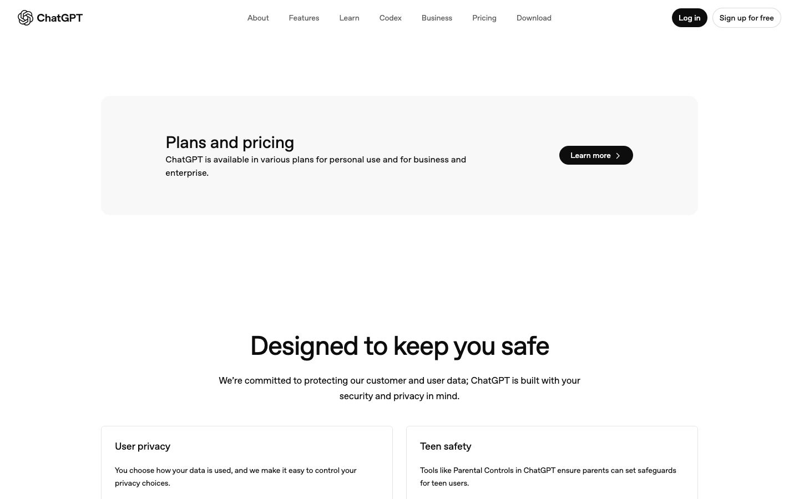
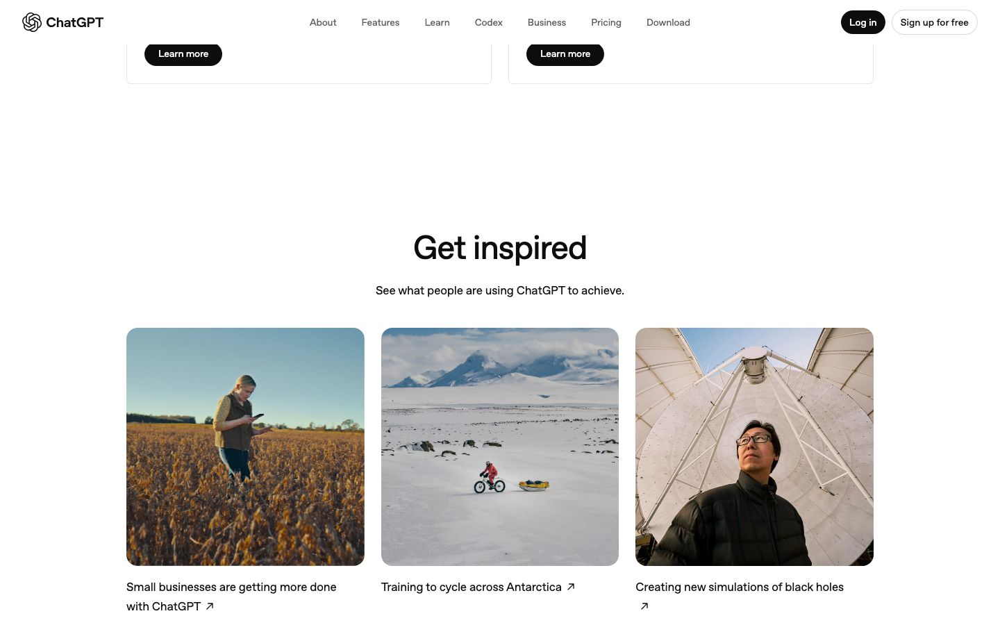
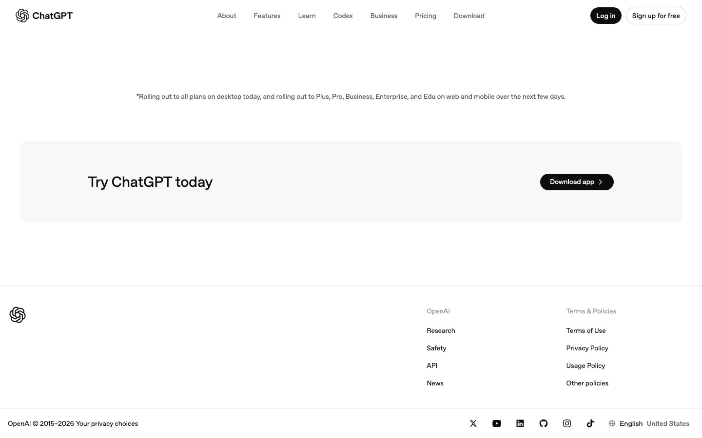
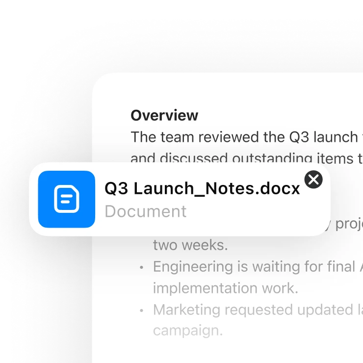
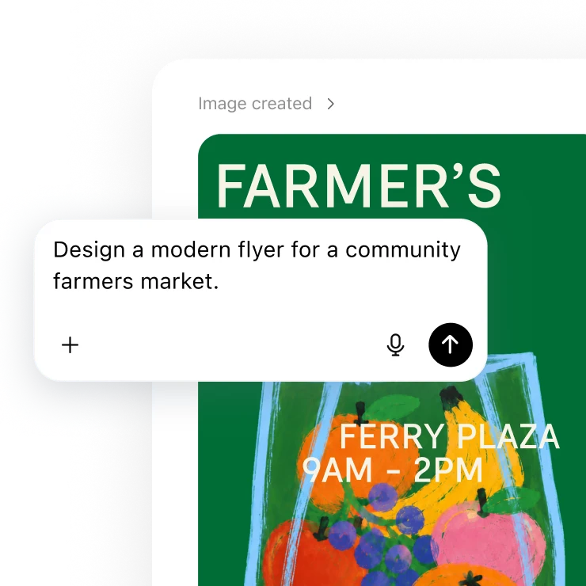
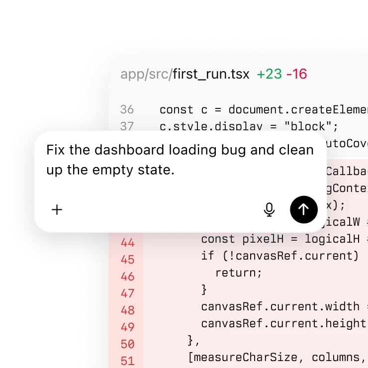
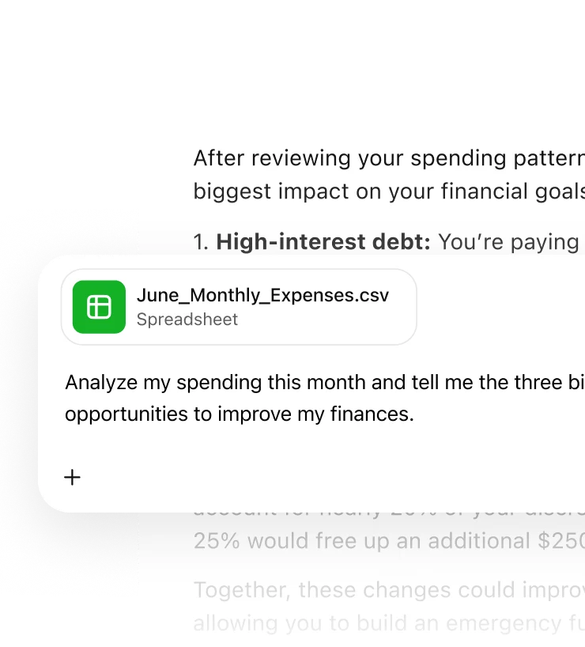

08 — as-seen 实拍(真实渲染关键帧)
它实际长什么样
下面是页面的真实渲染截图。整页探针截图当时命中了 Cloudflare 人机校验页,故这里改用滚动录制抽出的关键帧作为实拍证据。






说明:同目录 assets/actual-full.jpg 与 actual-hero.jpg 为探针整页截图,当时抓到的是 Verify you are human 校验页,不作视觉依据;上方关键帧取自真实滚动录制 recording/scroll.webm。
真实素材 · 站点能力卡原图(取自 real-assets,见 manifest.json)





这六张是概览页能力卡实际使用的产品图(线上为 WebP,本地扩展名沿用 .png),与上文用 HTML 复现的"卡海"互为对照:复现证明结构与手感,原图锁定真实观感。每张卡都遵守同一条纪律——彩色只从内容里长出来,框架永远是纯白与发丝边。